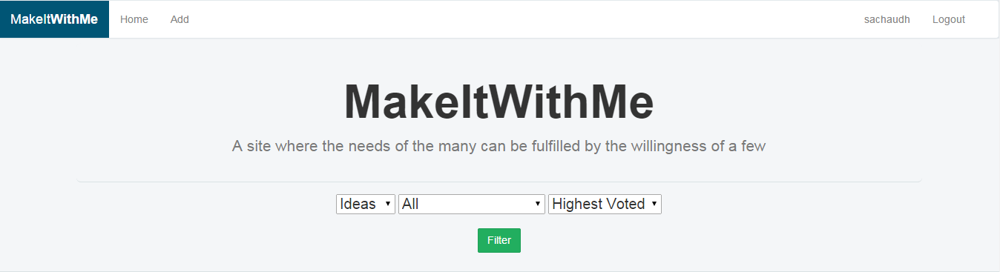
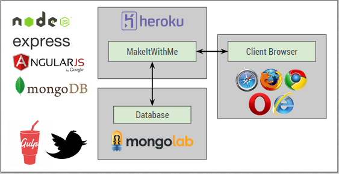

Some of the most creative and inovational ideas have manifested from the minds of programmers, but not everyone is blessed with an inspiring mind for the creation of ideas/solutions. MakeItWithMe is a web application that lets programmers look for ideas from other inspiring minds and make them!

Web Application
This web app allows users to log into an account, search posts, add posts, comment on posts, and email posters. Users can add posts in order to find someone who is suitable to work on their project "idea". Users can also comment on these posts in order to flesh out any additional details. Once they find that the idea is something they wish to work on, they can send an email to the poster with any furthur contact being established through said email discussion.
Technologies

- MongoDB - MongoDB is a document database that provides high performance, high availability, and easy scalability
- Mongoose - Mongoose provides a straight-forward, schema-based solution to modeling your application data and includes built-in type casting, validation, query building, business logic hooks and more, out of the box.
- Express - Express is a minimal and flexible node.js web application framework, providing a robust set of features for building single and multi-page, and hybrid web applications
- Angular - AngularJS lets you write client-side web applications as if you had a smarter browser. It automatically synchronizes data from your UI (view) with your JavaScript objects (model) through 2-way data binding. To help you structure your application better and make it easy to test, AngularJS teaches the browser how to do dependency injection and inversion of control as well.
- Node.js - Node.js is a platform built on Chrome's JavaScript runtime for easily building fast, scalable network applications. Node.js uses an event-driven, non-blocking I/O model that makes it lightweight and efficient, perfect for data-intensive real-time applications that run across distributed devices
- Gulp - Gulp is task runner that automates many of the time consuming tasks that you have to do while developing a project. These include tasks such as running tests, concatenating files, minification, and CSS preprocessing. By simply creating a task file, you can instruct the task runner to automatically take care of just about any development task you can think of as you make changes to your files.